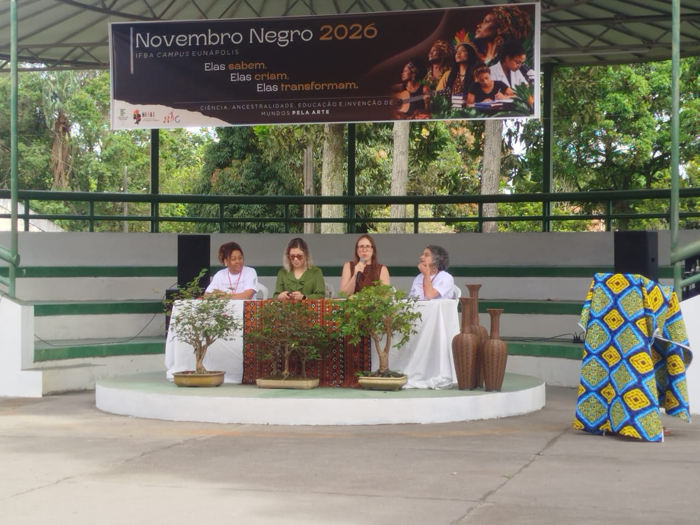

MEMÓRIAS / CONSCIÊNCIA NEGRA / ALUNOS: REILLY, EVERTON E LUIS FELIPE
Nosso diário
SOBRE ESTE DIÁRIO
Memórias que constroem histórias.
Este diário de bordo integra um projeto pedagógico de caráter avaliativo, desenvolvido durante a unidade letiva pelos alunos: Reilly, Everton e Luis Felipe, da turma EI-31, do Instituto Federal da Bahia (IFBA).
O projeto tem como objetivo registrar e descrever as experiências vivenciadas durante o evento relacionado à Consciência Negra, reunindo relatos das atividades, aprendizados, observações e reflexões dos integrantes do grupo.
Por meio desses registros, buscamos documentar nossa participação nas atividades propostas, aprofundar a compreensão sobre as questões étnico-raciais e destacar a importância da história, da cultura, da ancestralidade e do protagonismo da população negra na formação da sociedade brasileira.
Uma introdução à nossa jornada de aprendizado, memória e valorização da cultura negra.
Raízes & Vozes · Diário de Bordo · EI-31
ACOMPANHE A EXPERIÊNCIA
Memórias registradas
Registros de 17 de novembro de 2026
17 NOVEMBRO 2026 · TERÇA-FEIRA
Mesa de Abertura Institucional
Reflexão

O momento de acolhimento e abertura oficial da programação despertou em nós uma reflexão sobre o verdadeiro papel da educação diante das desigualdades sociais. A presença dos representantes da gestão institucional, do NEABI, da comissão organizadora e do Grêmio Estudantil simbolizou a construção de um compromisso que não pertence exclusivamente à instituição, mas a todos que a constituem.
Em Pedagogia do Oprimido, Paulo Freire defende a dimensão coletiva da libertação ao afirmar que “os homens se libertam em comunhão”.
Essa afirmação permite compreender que a superação das desigualdades raciais não pode ser resultado de esforços isolados, tampouco de decisões tomadas exclusivamente pelas autoridades institucionais. Ela exige diálogo, participação e, sobretudo, o reconhecimento daqueles que historicamente tiveram suas vozes e experiências marginalizadas.
Sob a perspectiva freiriana, uma educação verdadeiramente libertadora não se limita a ensinar sobre as injustiças, mas permite que os indivíduos desenvolvam uma consciência crítica e se reconheçam como sujeitos capazes de transformar a realidade. Nesse sentido, a presença da representação estudantil na abertura assumiu um significado especial: os estudantes não devem ser apenas destinatários de uma proposta educacional, mas participantes ativos de sua construção.
Entretanto, esse momento também me despertou uma inquietação: de que maneira os compromissos anunciados naquela abertura ultrapassarão os limites do evento? Essa questão dialoga diretamente com o conceito freiriano de práxis, que une a reflexão à ação transformadora.
Saimos dessa abertura com a percepção de que o maior desafio da programação não está simplesmente em conscientizar, mas em fazer com que essa consciência encontre expressão nas pequenas atitudes do cotidiano. Uma instituição antirracista não se constrói apenas nos momentos em que se discute o racismo, mas, principalmente, naqueles em que se escolhe não reproduzi-lo.
17 NOVEMBRO 2026 · TERÇA-FEIRA
Arquitetura decolonial: arquitetura como representação da luta pela terra na obra torto arado
Reflexão
A exposição de maquetes inspiradas na obra Torto Arado, de Itamar Vieira Junior, nos fez enxergar a arquitetura de uma maneira diferente. Aquilo que normalmente associamos à construção de casas, às técnicas e aos materiais ganhou um significado muito mais profundo, envolvendo questões de identidade, pertencimento, liberdade e resistência.
Na obra, a proibição da construção de casas de alvenaria nos revela uma realidade contraditória: aquelas pessoas podiam trabalhar na terra, constituir suas famílias e construir suas histórias, mas não tinham a garantia de permanecer no lugar onde nasceram e cresceram. A fragilidade das casas de barro, naquele contexto, refletia também a fragilidade de seus direitos.
Um dos aspectos que mais nos chamou a atenção foi perceber como algo aparentemente simples, como construir uma casa de alvenaria, poderia representar uma importante conquista social. Cada tijolo simbolizava não apenas a construção de uma moradia, mas também a esperança de um futuro marcado pela liberdade e pelo pertencimento.
Um detalhe de Torto Arado que torna essa discussão ainda mais significativa é o costume dos moradores de Água Negra de enterrar os umbigos dos recém-nascidos na terra onde viviam, assim como nela sepultavam seus antepassados. Essa tradição nos fez perceber que a relação daquele povo com o território ultrapassava qualquer sentido econômico ou material. Era ali que suas histórias começavam, suas memórias eram construídas e suas raízes permaneciam.
Diante disso, a proibição da construção de casas permanentes se torna ainda mais contraditória. Como poderiam ser considerados estranhos a uma terra que guardava tantas gerações de suas próprias famílias? Ao observarmos as maquetes, conseguimos compreender que a luta pela construção de uma casa de alvenaria representava também a luta pelo reconhecimento de uma história que já existia muito antes de qualquer reivindicação de propriedade.
Outro ponto que nos levou à reflexão foi o protagonismo feminino das personagens Bibiana e Belonísia. Suas trajetórias evidenciam a importância das mulheres na resistência às injustiças, na preservação da memória e na conquista de direitos, fazendo-nos pensar sobre quantas lutas femininas foram fundamentais para a transformação da sociedade, mesmo sem receberem o devido reconhecimento histórico.
Ao observarmos as maquetes, percebemos que não estávamos simplesmente diante de pequenas representações de casas, mas de uma representação material de histórias, conflitos e conquistas que atravessam gerações.
Por fim, esse momento nos deixou uma reflexão: para quem nunca precisou lutar pelo direito de permanecer em sua própria terra, uma casa pode parecer apenas uma construção. Para quem teve esse direito negado, ela representa liberdade, dignidade e a possibilidade de construir o próprio futuro.
17 NOVEMBRO 2026 · TERÇA-FEIRA
Entre saberes e sabores: viveres, corpos e existências
Reflexão
A apresentação do livro digital de receitas, desenvolvido a partir das experiências dos estudantes com as merendeiras do IFBA, nos fez repensar a maneira como enxergamos o conhecimento e os espaços em que ele é construído.
O projeto, idealizado pela nutricionista Venuska Leite, mostrou que a aprendizagem pode acontecer de maneira espontânea, por meio da convivência e da troca de experiências. O simples ato de preparar uma receita possibilitou a integração de conhecimentos matemáticos, linguísticos e alimentares, aproximando a teoria da realidade cotidiana.
O que mais nos chamou a atenção, entretanto, foi a valorização das merendeiras como protagonistas desse processo. São profissionais com quem convivemos diariamente, mas cujas histórias, experiências e conhecimentos raramente temos a oportunidade de conhecer. Nesse sentido, o projeto também nos fez refletir sobre a invisibilidade de determinados trabalhadores dentro dos espaços que frequentamos.
É interessante pensar em como, muitas vezes, atribuímos maior importância ao conhecimento adquirido por meio de livros e formações acadêmicas, enquanto deixamos de reconhecer aquele construído ao longo de anos de experiência. Essa atividade nos mostrou que essas diferentes formas de conhecimento não precisam competir entre si, mas podem se complementar.
A produção do e-book também representa uma maneira de preservar memórias e reconhecer a importância da culinária na transmissão de tradições culturais. Afinal, por trás de uma receita, podem existir histórias familiares, lembranças da infância e conhecimentos compartilhados entre gerações.
Mais do que apresentar um livro de receitas, esse momento nos convidou a olhar com maior atenção para as pessoas que fazem parte da nossa rotina. Quantas vezes estivemos diante de alguém que tinha muito a nos ensinar, mas não nos permitimos aprender simplesmente por não reconhecermos naquela pessoa a figura de um educador?
17 NOVEMBRO 2026 · TERÇA-FEIRA
Capoeira Experimental
Reflexão
A atividade de capoeira experimental nos proporcionou uma experiência que foi além da prática esportiva. Ao conhecermos suas origens e seu contexto histórico, conseguimos compreender como os movimentos, a musicalidade e as tradições da capoeira carregam marcas da resistência e da identidade cultural afro-brasileira.
O que nos chamou a atenção foi perceber como uma manifestação cultural que já foi perseguida e criminalizada passou a ser reconhecida como parte importante da identidade brasileira. Essa transformação nos fez refletir sobre uma contradição presente em nossa sociedade: muitas expressões da cultura negra, hoje admiradas, foram historicamente reprimidas e desvalorizadas.
A parte prática, composta por alongamentos e movimentos básicos, nos permitiu experimentar aquilo que até então conhecíamos principalmente pela teoria. Percebemos que a capoeira exige não apenas habilidade física, mas também atenção, equilíbrio, ritmo, respeito e compreensão do outro. Existe uma espécie de diálogo entre os participantes, no qual o corpo se torna uma forma de comunicação.
Outro aspecto interessante foi compreender como o próprio corpo pode ser um instrumento de preservação da memória. Nem toda história precisa estar registrada em livros para atravessar gerações. Ela também pode ser transmitida por gestos, movimentos, músicas e experiências compartilhadas.
Esse momento nos fez pensar sobre a importância de vivenciar as manifestações culturais, em vez de apenas estudá-las de maneira distante. Ao praticarmos a capoeira, nos aproximamos de uma tradição que carrega histórias de resistência, criatividade e afirmação de identidade.
Mais do que aprender alguns movimentos, tivemos a oportunidade de compreender que a cultura também se manifesta pelo corpo e que, por meio dele, um povo pode preservar e reafirmar sua história.
ACOMPANHE A EXPERIÊNCIA
Memórias registradas
Registros de 18 de novembro de 2026
18 NOVEMBRO 2026 · QUARTA-FEIRA
Mesa-Redonda – Ancestralidade e Resistência: O Protagonismo das Mulheres Negras e Indígenas e seu Papel Político nas Artes, na Ciência e na Vida em Comunidade
Reflexão
A mesa-redonda, com a participação de Adriana Pesca, Raíza Canuta e Jéssica Tailane, nos proporcionou um momento de reflexão sobre o protagonismo das mulheres negras e indígenas na sociedade. A presença de mulheres de diferentes áreas de atuação, como a ciência, a educação, a literatura e as artes plásticas, nos fez perceber as diversas maneiras pelas quais elas contribuem para a produção do conhecimento e a transformação da vida em comunidade.
Um dos aspectos mais interessantes desse momento foi compreender a ancestralidade não apenas como uma ligação com o passado, mas como algo que permanece vivo nos conhecimentos, nas manifestações culturais e nas lutas do presente. É perceber que muitas das conquistas atuais são frutos de caminhos construídos por mulheres de outras gerações, cujas histórias nem sempre receberam o devido reconhecimento.
Essa discussão nos remete à obra Becos da Memória, de Conceição Evaristo, especialmente à trajetória de Maria-Nova. Em determinado momento do romance, a personagem, ao estudar a escravidão na escola, percebe a distância entre a história apresentada nos livros didáticos e as experiências das pessoas de sua comunidade. Surge, então, o desejo de narrar essas histórias, preservando memórias que poderiam ser esquecidas ou silenciadas.
Ao relacionarmos essa passagem com a proposta da mesa-redonda, conseguimos perceber que a presença de mulheres negras e indígenas nas artes, na literatura e na ciência representa muito mais do que uma conquista de espaço. Representa também a possibilidade de produzir conhecimentos a partir de suas próprias experiências e de assumir a autoria de suas histórias.
Isso nos fez pensar sobre quantas contribuições científicas, manifestações artísticas e experiências humanas desconhecemos simplesmente porque determinadas vozes não receberam a mesma atenção ao longo da história. Afinal, existe uma diferença profunda entre ter sua história contada por outras pessoas e possuir a liberdade de contá-la com a própria voz.
Entretanto, também consideramos importante não romantizar a resistência dessas mulheres. Ao mesmo tempo que admiramos sua força e determinação, precisamos questionar as circunstâncias que constantemente exigem delas tamanha resistência. Reconhecer suas conquistas não significa naturalizar as dificuldades que precisaram enfrentar.
Outro aprendizado desse momento foi perceber que a atuação política não se limita aos espaços governamentais. Ela também pode acontecer na produção de uma obra artística, no desenvolvimento de uma pesquisa, na transmissão de conhecimentos ancestrais e na preservação das tradições de uma comunidade.
Ao final, essa experiência nos deixou uma reflexão: precisamos aprender a enxergar essas mulheres para além das injustiças que enfrentaram. Suas existências não se resumem à luta, mas também são constituídas por sonhos, inteligência, criatividade, afetos e realizações.
Valorizar o protagonismo dessas mulheres é reconhecê-las não apenas como personagens de uma história de resistência, mas como autoras de seus próprios caminhos e produtoras do conhecimento que transforma nossa sociedade.
18 NOVEMBRO 2026 · QUARTA-FEIRA
Escrevivências
Reflexão
A exposição das Escrevivências, desenvolvida pelos estudantes do curso de Informática, nos proporcionou um momento de aproximação com diferentes histórias, memórias e realidades. Por meio de textos, poesias, relatos e produções artísticas, tivemos a oportunidade de conhecer outras dimensões das pessoas com quem compartilhamos diariamente o ambiente escolar.
Essa atividade está diretamente relacionada ao conceito de escrevivência, desenvolvido pela escritora Conceição Evaristo, que compreende a escrita a partir das experiências vividas, especialmente aquelas marcadas pela identidade, pela ancestralidade e pela memória coletiva. Nessa perspectiva, escrever não significa apenas organizar palavras, mas também expressar aquilo que nos constitui enquanto indivíduos e enquanto parte de uma sociedade.
O que torna essa exposição interessante é justamente a possibilidade de encontrar significado em acontecimentos aparentemente comuns. Uma lembrança da infância, uma tradição familiar, uma experiência religiosa ou até mesmo uma situação cotidiana pode carregar reflexões profundas sobre nossa identidade e nossa maneira de compreender o mundo.
Também nos fez pensar sobre como convivemos com tantas pessoas sem necessariamente conhecermos suas histórias. Compartilhamos salas de aula, corredores e momentos de descontração, mas pouco sabemos sobre as experiências que moldaram a personalidade, os sentimentos e as perspectivas daqueles que estão ao nosso lado. A escrita, nesse contexto, tornou-se uma oportunidade de aproximação humana.
Outro aspecto importante foi perceber a relação entre a liberdade de expressão e a construção da identidade. Quando pessoas historicamente silenciadas encontram espaços para compartilhar suas experiências, elas passam a participar mais diretamente da construção da memória coletiva, revelando perspectivas que poderiam permanecer desconhecidas.
É interessante, ainda, que essa atividade tenha sido desenvolvida por estudantes de um curso predominantemente tecnológico. Isso nos fez refletir sobre a importância de uma formação que não se restrinja aos conhecimentos técnicos, mas que também desenvolva nossa sensibilidade, criatividade e capacidade de compreender diferentes realidades. Antes de sermos futuros profissionais, somos indivíduos constituídos por histórias, sentimentos e relações humanas.
Por fim, a exposição nos convidou a reconhecer o valor da nossa própria trajetória. Muitas vezes, acreditamos que precisamos viver acontecimentos extraordinários para termos algo relevante a contar, quando, na verdade, são as pequenas experiências do cotidiano que ajudam a construir aquilo que somos.
Talvez a beleza da escrevivência esteja justamente nisso: transformar aquilo que consideramos comum em algo digno de ser lembrado, compartilhado e compreendido. Afinal, nenhuma história é pequena quando carregamos nela parte da nossa existência.
PARA REFLETIR
Memória, identidade e futuro.
Reconhecer a história e a cultura negra é também revisitar nossa própria maneira de compreender o mundo. Quantas memórias, saberes e experiências permanecem invisíveis simplesmente porque não aprendemos a valorizá-los? A ancestralidade, a arte, a educação e as manifestações culturais nos revelam que a identidade de um povo é construída por histórias que resistem ao tempo e ao esquecimento. Nesse sentido, respeitar a diversidade implica repensar nossas relações, nossos olhares e as desigualdades que, muitas vezes, naturalizamos no cotidiano.